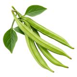

होम / ग्वार फली

ग्वार फली का भाव आज | Cluster Beans Mandi Price Today
ग्वार फली के आज के उपलब्ध मंडी भाव देखें—जालौर और शाहाबाद के मॉडल, न्यूनतम और अधिकतम रेट और प्रति किलो भाव।
नीचे मंडी-वार सूची में ग्वार फली के उपलब्ध भाव दिए हैं। मंडी के नाम पर क्लिक करके उस मंडी की दूसरी फसलों के भाव भी देख सकते हैं।
ग्वार फली का भाव कैसे देखें और रेट किन बातों से बदलता है
ग्वार फली ताज़ी सब्जी है और इसे ग्वार के दाने वाली फसल से अलग समझना चाहिए। फली की कोमलता, रंग और ताजगी के अनुसार एक ही मंडी में अलग lot का भाव बदल सकता है।
आज का ग्वार फली भाव कैसे देखें
इस पेज की मंडी-वार तालिका में न्यूनतम, मॉडल और अधिकतम भाव देखें। अपनी नज़दीकी मंडी तथा उपलब्ध दूसरी मंडियों के भाव की तुलना करके फैसला लेना अधिक उपयोगी रहता है।
- अपनी मंडी या राज्य चुनकर भाव देखें।
- न्यूनतम, मॉडल और अधिकतम भाव में अंतर समझें।
- पुराने और नए उपलब्ध रिकॉर्ड में फर्क देखकर निर्णय लें।
गुणवत्ता और ग्रेड का असर
कोमल, हरी और बिना दाग वाली फली को अलग grade मिल सकता है। अधिक पकी, रेशेदार, टूटी हुई या मुरझाई फली की बोली कम हो सकती है, इसलिए एक जैसे माल की ही तुलना करें।
आवक, मांग और बाजार
स्थानीय आवक, मौसम, परिवहन और जल्दी खराब होने की प्रकृति ग्वार फली के भाव पर असर डालती है। अलग मंडियों में उपलब्धता अलग होने से प्रति क्विंटल और प्रति किलो दर में अंतर दिख सकता है।
ग्वार फली बेचने या खरीदने से पहले ध्यान रखें
- ग्वार फली और ग्वार दाने के भाव को एक साथ न मिलाएँ।
- ताज़ी, कोमल और अधिक पकी फलियों का lot अलग रखें।
- मंडी-वार उपलब्ध भाव और प्रति किलो दर देखकर तुलना करें।
अक्सर पूछे जाने वाले सवाल
ग्वार फली का दूसरा नाम क्या है?
ग्वार फली को ग्वार की कोमल फली, Cluster Beans और Guar Bean भी कहा जाता है। यह ग्वार के सूखे दाने से अलग सब्जी है, इसलिए दोनों के भाव और उपयोग को एक जैसा नहीं मानना चाहिए।
ग्वार की फली खाने के क्या फायदे हैं?
ग्वार की फली एक फलीदार सब्जी है। इसे संतुलित भोजन में शामिल करने से आहारीय रेशा और कुछ विटामिन-खनिज मिलते हैं। इसे किसी बीमारी का इलाज न मानें; व्यक्तिगत आहार संबंधी सलाह के लिए योग्य स्वास्थ्य विशेषज्ञ से बात करें।
ग्वार की फली कौन से महीने में बोई जाती है?
बुआई का समय क्षेत्र, किस्म और सिंचाई पर निर्भर है। राजस्थान जैसे वर्षा-आधारित क्षेत्रों में प्रभावी मानसून के बाद जुलाई का पहला-दूसरा सप्ताह सामान्य समय माना जाता है; कुछ सिंचित या गर्म क्षेत्रों में दूसरी ऋतु भी संभव होती है। अपने जिले के कृषि विभाग या कृषि विज्ञान केंद्र की सलाह के अनुसार समय चुनें।